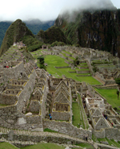
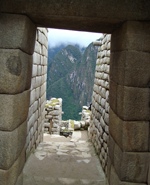
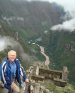

Cuzco and Macchu Picchu Tours
For many visitors to Peru and South America, a visit to the lost Inca city of Machu Picchu is the breathtaking culmination of their trip. Given its remote location and historical preservation, Machu Picchu remains the best-known archaeological site on the continent. In the high season from late May until early September, the limit of 2500 visitors per day is nearly always booked to capacity. So, it is important to plan your trip well in advance!
Sample program:
Typical Classic four day Inca Trail Trek Itinerary and Trail Description

Day 1 (12km): Travelers rise early in the morning and travel by bus through several villages during a scenic 3½ hour trip to kilometre 82 (the start of the trail). After crossing the Vilcanota River and passing through a small village, the ruins of the Inca hillfort of Huillca Raccay come into view high above the mouth of the river Cusichaca ('happy bridge'). It is a simple descent down to the Cusichaca river. The path follows the left bank of the river up to the village of Wayllabamba (3,000m). Most tour groups spend the first night here, although there are prettier campsites a little further on.
Day 2 (11km): Climbing for about three hours through steepening woods and increasingly spectacular terrain brings you to the treeline and a meadow known as Llulluchapampa (3,680m). It is another 1½ hour climb to the first and highest pass of the trail at 4,200m. During this part of the trail hikers are exposed to the Andean elements: first scorching sun and then, closer to the pass, freezing winds. Once at the top hikers can celebrate having completed the most difficult section of the trail. The descent from the pass is steep although not difficult, following the trail to the valley floor and to the 2nd night's campsite at Pacamayo (3,600m).

Day 3 (16km): From Pacamayo it is an hour climb to the ruins of Runkuracay. These small circular ruins occupy a commanding position overlooking the Pacamayo valley below. Another 45 minute hike will bring you to the top of the second pass: Abra de Runkuracay (4,000m). At last you'll feel that you are walking along the trail of the Incas with paving, for the most part, being original. This section of the trail is particularly beautiful, as the path crosses high stone embankments and skirts deep precipices. After about 1 hour from the 2nd pass you'll arrive at Sayacmarca by way of a superbly designed stone staircase.
You have to backtrack a ways to rejoin the trail as it passes Conchamarca, a small Inca dwelling situated in the shadows of Sayacmarca, which likely served as a motel for weary travelers on their way to Machu Picchu. From here, the path descends into a magnificent cloud forest full of orchids, hanging mosses, tree ferns and flowers.
The trail then climbs up to the 3rd pass (3,700m). The view from the pass offers excellent views of several snow-capped peaks including Salkantay (6,271m) and Veronica (5,750m). A few minutes after the pass is Phuyupatamarca, the most impressive Inca ruin so far. The name means 'Town in the Clouds'. Access to the ruins is down a steep flight of stairs passing six 'Inca Baths' probably used for the ritual worship of water.

Leaving the site via an impressive Inca staircase leading from the west side of the ruins (the far end from the baths), you descend a thousand or so steps. After about an hour of walking through cloud forest you may just be able to see the tin roof of the Trekkers Hostal at Wiñay Wayna, although it probably won't be for another 2 hours until you arrive.
The Trekkers Hostal certainly isn't considered one of Peru's best-looking hotels. It is also usually crowded and cramped, but it is the last official campsite before Machu Picchu, so it is normally full. There is, however, a restaurant where you can purchase food, drinks and even a well deserved beer, as well as hot showers and toilets. Trekkers on the Classic 4-day trek will camp here.
Day 4 (6km): The trail from the hostal to Machu Picchu is clearly marked and takes about 1½ hours. Most people attempt to wake up at 4:30 a.m. so that they can leave Wiñay Wayna by 5.30am to get to Machu Picchu before sunrise. The sky starts getting light by 6am and the first rays of the sun reach Machu Picchu at about 7am. The trail traces a mountainside and drops into the cloud forest before coming to an almost vertical flight of 50 steps leading up to the final pass at Intipunku (Sun Gate).
Suddenly, Machu Picchu is spread out before you in all of its glory: a spectacular climax of an unforgettable journey.
The trek itinerary above has been adapted from an itinerary provided courtesy of Peru Treks and is subject to international copyright.